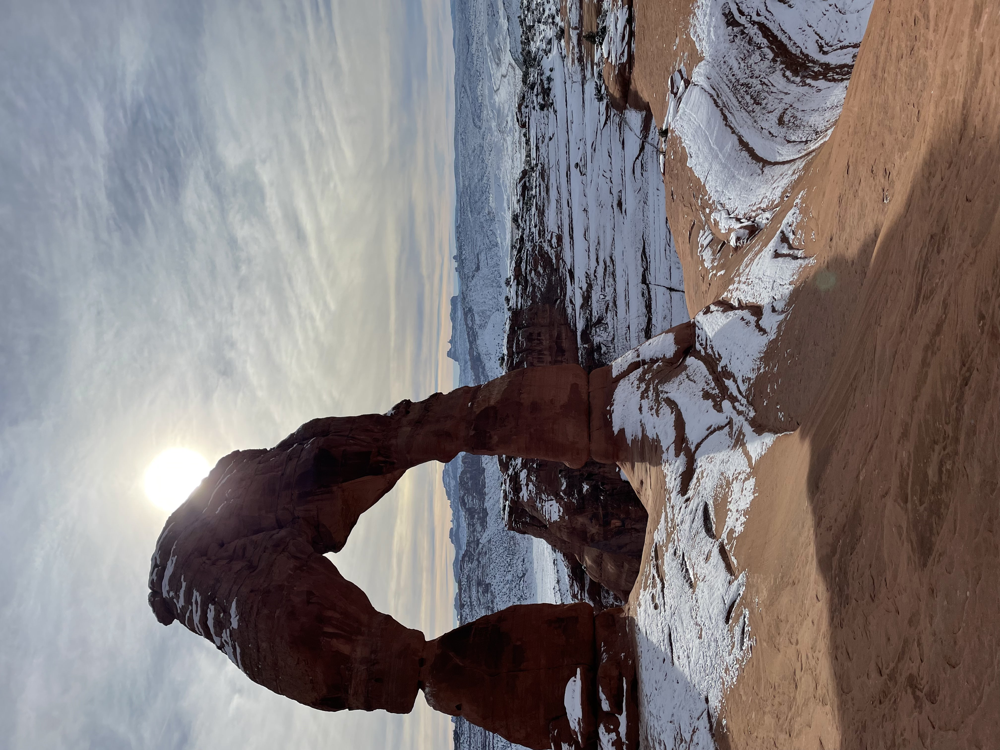
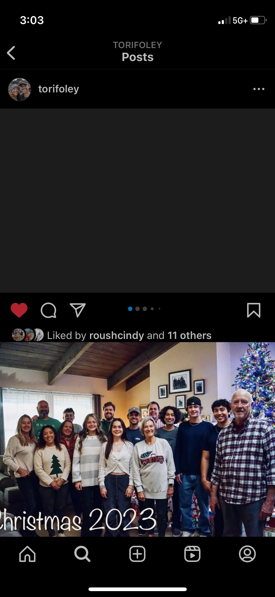

Travel
I am a person who loves to travel and loves the outdoors. One of my goals is to make it to all of the national parks in the US before I die. Traveling is very important to me, and I am privileged to have been able to do as much as I have already.
|
Athletics
Sports have always been something I love, and I am currently at Chapman’s Track and Field program doing pole vault. I grew up playing baseball and soccer while trying other sports as well. Sports let me make new friends and express my love for exercise.
|
|
About Me
My name is Brandon Foley, and I am a sophomore at Chapman University.
My passion for computing started at the beginning of high school.
I first tried out a graphic design class because the coding
classes were all full. Graphic design, while fun, was not for me,
and the following year, when I took my first coding class,
I truly fell in love with it. Since then, I have dived head-first into
coding with my projects in multiple courses and ultimately decided to major
in computer science in college. I have been coding since 2021 and constantly
seek new challenges or opportunities. I love working in teams and alone,
each of which has advantages. Working in teams allows for various ideas
and approaches, and problem-solving can be easier and more efficient with
more people. I also enjoy personal projects to help showcase myself and my
capabilities. My future goals are to join a company working with AI or
create my own product. I am also highly interested in quantum computing
and am looking into that more. In addition, I have interned for a tech start-up based
out of New York, Munnch Insights. For them I developed a frontened ordering platform
that is used today in their resturant.
In addition, I am also an athlete on the
track and field team at Chapman and enjoy working out and being outdoors.
I am always up for a thrill, whether hiking, snorkeling, or anything else
active. I also love to travel and have visited over 25 National Parks throughout
the United States. I can't wait to further my experiences in coding, athletics,
and life in general. I am always looking for something new and exciting, and I
can’t wait to see what the future holds.
|

Family
Family is one of my most important values, and I care about my family very much. I love our traditions and holidays together, and being with family is something I will never turn down.
|
Coding
I think that coding is something that is a form of art. There are so many projects you can make and there are infinitely many possibilities. This drew me to computer science and has allowed me to pursue my own projects.
|
|